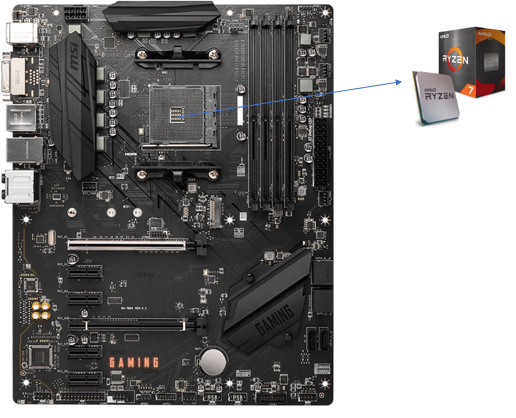
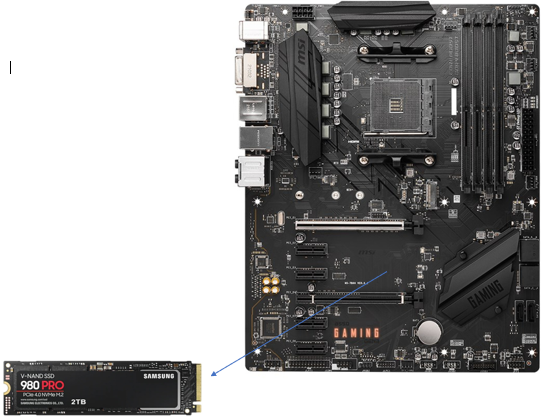
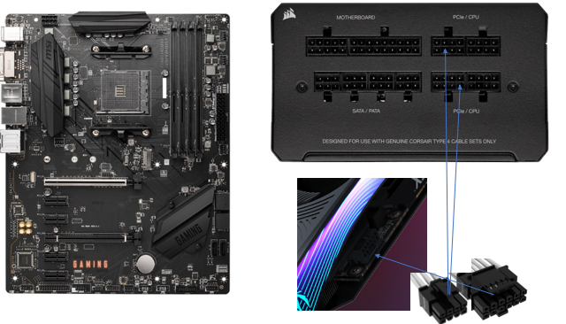

MOntagem do Computador.
1º PAsso: Colocar o processador no sítio com muito cuidado para não entortar os pinos e ter em atenção o lado para que o mesmo esteja virado.

2º Passo: Inserimos a memória ligando os pins no sítio certo depois de desaparafusar o parafuso que está a seguir aos pins e quando colocada a memória volta-se a pô-lo.

3º Passo: Colocamos a placa gráfica no sítio com cuidado para não partir os pins e virada para o lado certo. É preciso ter cuidado com os pins, pois há um espaço específico para colocá-los.


4º Passo: Colocamos as memórias nos slots A1 e B1 para trabalharem em dual channel, melhorando o desempenho das mesmas.

5º Passo: Logo de seguida colocamos a motherboard com o hardware já colocado dentro da caixa e aparafusamos.

6º Passo: De seguida, pomos a fonte na caixa e ligamos os cabos à mesma.

7º Passo: No final de ligarmos os cabos corretamente e de pormos os componentes no sítio, começamos a colocar o cooler.
1º passo: Colocamos por cima do processador um pouco de pasta térmica.

2º Passo: Colocamos o cooler em cima depois de espalhar um pouco a pasta para preencher a parte de cima do processador todo.
